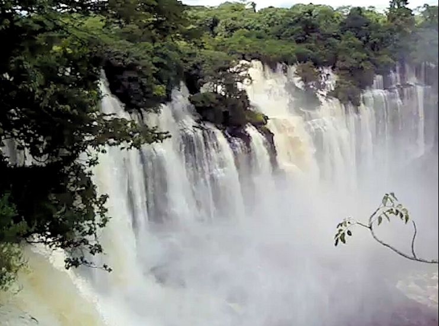

Destinos Turísticos em Destaque
Conheça os lugares mais impressionantes da província de Malanje

Quedas de Kalandula
Kalandula, Malanje
Uma das maiores quedas de água em volume de África, com 105 metros de altura.

Pedras Negras de Pungo Andongo
Cacuso, Malanje
Imponentes formações rochosas com vista panorâmica e rica história ligada à rainha Nzinga.

Lagoa do Carumbo
Cangandala, Malanje
Lagoa de águas cristalinas rodeada por vegetação exuberante, ideal para lazer e contemplação.

Reserva Natural de Milando
Milando, Malanje
Área de conservação com fauna e flora diversificada, perfeita para ecoturismo.

Palácio do Rei Mwatiânvua
Malanje
Património histórico que conta a história da dinastia Lunda, com arquitetura tradicional.

Cascata de Musseleje
Cacuso, Malanje
Cascata de águas cristalinas, rodeada por uma vegetação luxuriante e tranquilidade.